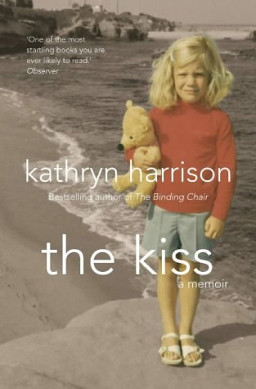

A csók (The Kiss)
Író: Kathryn Harrison Kiadás: 1977
A csók" (The Kiss) Kathryn Harrison tollából, 1997-ben megjelent memoár, amelyben az írónő őszintén és merészen beszél saját élményéről, egy tabutémáról: saját apjával folytatott zaklató viszonyáról. A regény megdöbbentő őszinteséggel vizsgálja az összetett emberi kapcsolatokat és a tabudöntögető témákat, hozzájárulva a személyes tapasztalatok és az irodalom határterületén való felfedezéshez.
Kathryn Harrison

Foglalkozása: Író Született: 1961
Élet és Munka: Kathryn Harrison egy amerikai író és memoárista, aki a szépirodalomban és életrajzi műfajokban is alkot. Híres Művei: Harrison olyan műveiről ismert, mint a "The Kiss" (A csók), amely egy személyes memoár a családi traumákról és az érzelmekről.